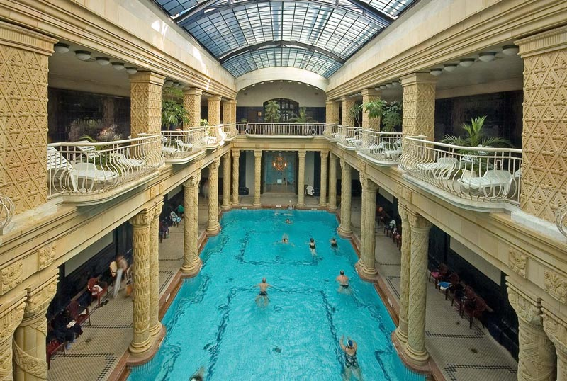
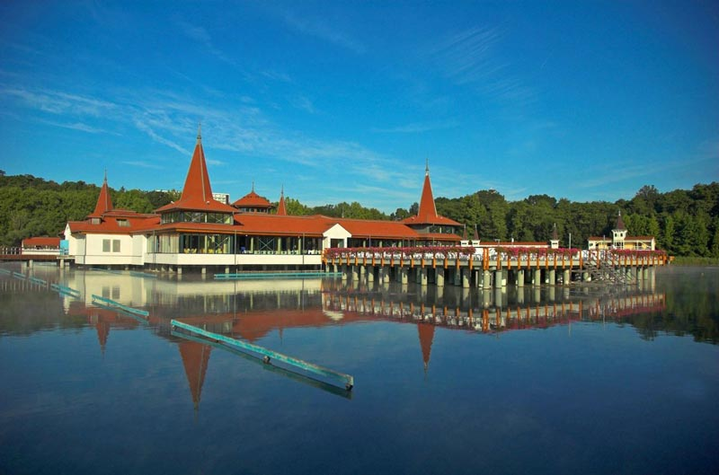
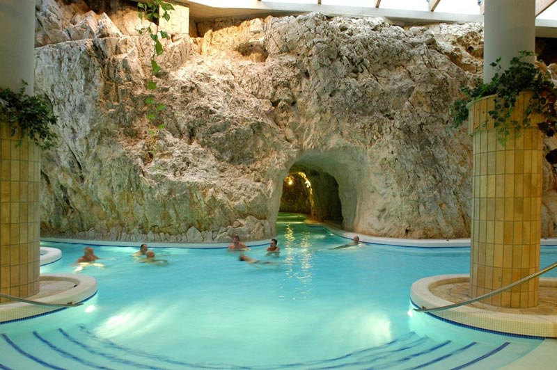
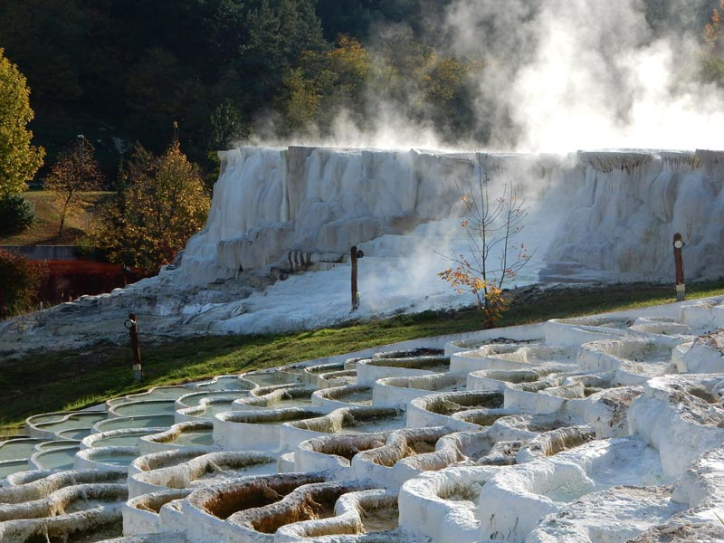

匈牙利的药用水（温泉）
2020/11/6 19:03:50
详细介绍
匈牙利特殊的旅游意义是其在世界上具有重要的热水资源（仅次于冰岛，匈牙利，是世界上最大的地表热水资源）。热水的热源在全国所有地区都有，并为许多温泉提供热源。布达佩斯是世界上唯一拥有水疗中心的首都。

匈牙利的温泉水极为丰富。最热的热水超过了80摄氏度。日常生活中，热水，温泉水和药用水的概念十分混淆。温泉水是含有很多矿物质，药用水是热水，由于含有矿物质，已被证明对疾病有治愈作用。
2000年匈牙利总共有1289处已注册的热水井。目前，社会保障体系和各种健康保险基金为匈牙利客人使用水疗服务提供了部分支持。
在过去的十年中，水疗中心已进行了大量的建设和基础设施扩展，水疗酒店系统不断扩大，健康酒店也已建立，最著名的水疗洞穴已在运营，许多水上乐园已建成。
匈牙利的温泉水资源是一种特殊的功能。就全球而言，匈牙利水文在数量和质量上都是超众的。匈牙利旅游业类似马赛克，它们不会出现在一个地方，但彼此相邻。它们相互促进，始终以发展政策为先决条件。匈牙利的热水资源是组织旅游业镶嵌性质的切入点，是别国不能相比的。它不仅能够充分实现创造就业的效果，而且还是用最少的投资生产GDP的最便宜的方式。在旅游业的基础上开发的温泉水已经持续了几十年，但结果仍然不能令人满意。因此，有必要启动大规模计划以发展热门旅游业。

地热特征
在该地区土地结构的发展过程中，喀尔巴阡盆地下的地壳变得相对较薄，结果高温地幔接近了地表，这种有利的地质条件产生了大量的热水。水文地质特征
喀尔巴阡盆地地球历史发展过程中形成的条件为含水层提供了有利条件。匈牙利几乎没有一部分地区的地表以下不会出现具有良好含水层特性的地层。由于地热条件，储存在其中的水的温度与深度成正比。
皮肤学特征
由于匈牙利的特殊的药理学特征，它含丰富的矿泉水和药用热水。除了冰岛，日本，美国， 法国，意大利，中国和新西兰之外，这里还有最大的热水储备。
这里的热水，在世界上就药用和美容功效方面是独一无二的。高质量的热水和药用水可治和预防多种疾病。最著名的：布达佩斯浴场，最大的浴场有哈卡尼,赫维兹，库克菲德,扎拉卡罗斯,萨尔瓦尔,久拉,德布勒森。它们体现了迄今为止尚未开发的自然价值，天然药物的兴起，同时极为丰富的自然疗养因素，这进一步增加了人们对水治疗的兴趣。

匈牙利独特的水疗和温泉旅游设施
目前，各种形式的健康旅游在世界旅游中正发挥着越来越重要的作用。这种趋势还将在将来增加和促进欧洲和匈牙利的旅游。在世界范围内，对天然药物，健康的生活方式以及保持良好状态和预防疾病的需求正在增长。在温泉水和药用水方面，匈牙利在欧洲排名第一。匈牙利70％的领土的自然水温均高于+ 30°C。在大平原的边缘，沿着中山的断层线，建立了天然的水裂缝和泉水。
温泉水和药用水可以分为以下几类：
碳酸水或酸性水，主要在火山岩山或其边缘。巴拉顿高地，巴拉顿湖的南部海岸，塞克什白堡及其周边地区，多瑙河西部的巴尔夫和库克，马特拉山的天堂浴。碱性水域：在大平原上贝克斯卡巴,基斯肯哈拉斯，索尔诺克的安娜泉。多瑙河的菊苣，瑙吉奥塔德，考波什堡，乔科尼奥维雄陶，查拉卡洛什，匈牙利北部的比克克塞克。
硫药用水域：在多瑙河哈卡尼的赫维兹，巴尔夫，西斯塔普斯塔，匈牙利北部的博加奇，凯凯德，布达佩斯的卢卡奇和鲁达，巴斯。
钙质水域：布达佩斯的大多数温泉，埃斯泰尔戈姆和米什科尔奇塔波卡温泉，阿格尼斯·莫海温泉和帕拉德的圣史蒂芬温泉。
苦水在发现布达佩斯，纳吉格曼德，蒂绍耶内。
盐水在布达佩斯，德布勒森，萨尔瓦尔，伊加尔，豪伊杜索博斯洛。
碘，溴水：这些来自大平原的深井。
放射源在布达佩斯的盖勒特浴场和鲁达浴场，埃格尔，米什科尔奇塔波卡，赫维兹湖。
简单的热水：位于全国大部分地区。

匈牙利温泉水分组
冷药水和温泉水温泉水的温度基于低于30°C的寒冷，在此称为死水站。来自深井的水仅在温度超过30°C时才称为热水或热水。
匈牙利的沐浴文化可以追溯到2000年前。以前的浴室建筑，壁画和马赛克的废墟也证明了罗马人已经发现并使用了这些疗养泉。匈牙利以药用水闻名世界，药用水在旅游业中发挥着重要作用。

匈牙利水文学的特点是其热水丰富：其热水供应在世界上也很重要，在欧洲是独一无二的。大多数矿泉水和药用水也含有溶解的矿物质，因此它们具有愈合作用，即它们适合沐浴和饮用。目前，有超过一千口井提供高于30°C的热水和大量药用水。匈牙利的药用水域遍布该国几乎所有地区，其中四分之三的水井位于大平原。
匈牙利大约有150个热水温泉，其中36个特殊温泉包括放射性水，硫酸，盐溴碳酸盐和碘水。在匈牙利东北部，欧洲唯一的洞穴浴就是Tapolca，而巴拉顿湖附近的赫维兹是欧洲最著名的温暖（33°C）湖。布达佩斯数十年来一直有世界“温泉之都”之称。匈牙利2000年的矿泉水产量为3.85亿升。